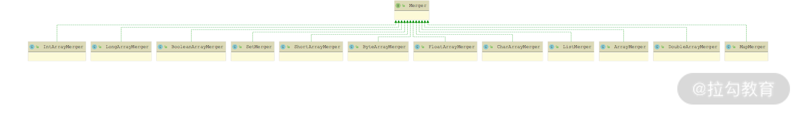

- 00 开篇词 深入掌握 Dubbo 原理与实现，提升你的职场竞争力.md.html
- 01 Dubbo 源码环境搭建：千里之行，始于足下.md.html
- 02 Dubbo 的配置总线：抓住 URL，就理解了半个 Dubbo.md.html
- 03 Dubbo SPI 精析，接口实现两极反转（上）.md.html
- 04 Dubbo SPI 精析，接口实现两极反转（下）.md.html
- 05 海量定时任务，一个时间轮搞定.md.html
- 06 ZooKeeper 与 Curator，求你别用 ZkClient 了（上）.md.html
- 07 ZooKeeper 与 Curator，求你别用 ZkClient 了（下）.md.html
- 08 代理模式与常见实现.md.html
- 09 Netty 入门，用它做网络编程都说好（上）.md.html
- 10 Netty 入门，用它做网络编程都说好（下）.md.html
- 11 简易版 RPC 框架实现（上）.md.html
- 12 简易版 RPC 框架实现（下）.md.html
- 13 本地缓存：降低 ZooKeeper 压力的一个常用手段.md.html
- 14 重试机制是网络操作的基本保证.md.html
- 15 ZooKeeper 注册中心实现，官方推荐注册中心实践.md.html
- 16 Dubbo Serialize 层：多种序列化算法，总有一款适合你.md.html
- 17 Dubbo Remoting 层核心接口分析：这居然是一套兼容所有 NIO 框架的设计？.md.html
- 18 Buffer 缓冲区：我们不生产数据，我们只是数据的搬运工.md.html
- 19 Transporter 层核心实现：编解码与线程模型一文打尽（上）.md.html
- 20 Transporter 层核心实现：编解码与线程模型一文打尽（下）.md.html
- 21 Exchange 层剖析：彻底搞懂 Request-Response 模型（上）.md.html
- 22 Exchange 层剖析：彻底搞懂 Request-Response 模型（下）.md.html
- 23 核心接口介绍，RPC 层骨架梳理.md.html
- 24 从 Protocol 起手，看服务暴露和服务引用的全流程（上）.md.html
- 25 从 Protocol 起手，看服务暴露和服务引用的全流程（下）.md.html
- 26 加餐：直击 Dubbo “心脏”，带你一起探秘 Invoker（上）.md.html
- 27 加餐：直击 Dubbo “心脏”，带你一起探秘 Invoker（下）.md.html
- 28 复杂问题简单化，代理帮你隐藏了多少底层细节？.md.html
- 29 加餐：HTTP 协议 + JSON-RPC，Dubbo 跨语言就是如此简单.md.html
- 30 Filter 接口，扩展 Dubbo 框架的常用手段指北.md.html
- 31 加餐：深潜 Directory 实现，探秘服务目录玄机.md.html
- 32 路由机制：请求到底怎么走，它说了算（上）.md.html
- 33 路由机制：请求到底怎么走，它说了算（下）.md.html
- 34 加餐：初探 Dubbo 动态配置的那些事儿.md.html
- 35 负载均衡：公平公正物尽其用的负载均衡策略，这里都有（上）.md.html
- 36 负载均衡：公平公正物尽其用的负载均衡策略，这里都有（下）.md.html
- 37 集群容错：一个好汉三个帮（上）.md.html
- 38 集群容错：一个好汉三个帮（下）.md.html
- 39 加餐：多个返回值不用怕，Merger 合并器来帮忙.md.html
- 40 加餐：模拟远程调用，Mock 机制帮你搞定.md.html
- 41 加餐：一键通关服务发布全流程.md.html
- 42 加餐：服务引用流程全解析.md.html
- 43 服务自省设计方案：新版本新方案.md.html
- 44 元数据方案深度剖析，如何避免注册中心数据量膨胀？.md.html
- 45 加餐：深入服务自省方案中的服务发布订阅（上）.md.html
- 46 加餐：深入服务自省方案中的服务发布订阅（下）.md.html
- 47 配置中心设计与实现：集中化配置 and 本地化配置，我都要（上）.md.html
- 48 配置中心设计与实现：集中化配置 and 本地化配置，我都要（下）.md.html
- 49 结束语 认真学习，缩小差距.md.html
- 捐赠
39 加餐：多个返回值不用怕，Merger 合并器来帮忙
你好，我是杨四正，今天我和你分享的主题是 Merger 合并器。
在上一课时中，我们分析 MergeableClusterInvoker 的具体实现时讲解过这样的内容：MergeableClusterInvoker 中会读取 URL 中的 merger 参数值，如果 merger 参数以 “.” 开头，则表示 “.” 后的内容是一个方法名，这个方法名是远程目标方法的返回类型中的一个方法，MergeableClusterInvoker 在拿到所有 Invoker 返回的结果对象之后，会遍历每个返回结果，并调用 merger 参数指定的方法，合并这些结果值。
其实，除了上述指定 Merger 方法名称的合并方式之外，Dubbo 内部还提供了很多默认的 Merger 实现，这也就是本课时将要分析的内容。本课时将详细介绍 MergerFactory 工厂类、Merger 接口以及针对 Java 中常见数据类型的 Merger 实现。
MergerFactory
在 MergeableClusterInvoker 使用默认 Merger 实现的时候，会通过 MergerFactory 以及服务接口返回值类型（returnType），选择合适的 Merger 实现。
在 MergerFactory 中维护了一个 ConcurrentHashMap 集合（即 MERGER_CACHE 字段），用来缓存服务接口返回值类型与 Merger 实例之间的映射关系。
MergerFactory.getMerger() 方法会根据传入的 returnType 类型，从 MERGER_CACHE 缓存中查找相应的 Merger 实现，下面我们来看该方法的具体实现：
public static <T> Merger<T> getMerger(Class<T> returnType) {
if (returnType == null) { // returnType为空，直接抛出异常
throw new IllegalArgumentException("returnType is null");
}
Merger result;
if (returnType.isArray()) { // returnType为数组类型
// 获取数组中元素的类型
Class type = returnType.getComponentType();
// 获取元素类型对应的Merger实现
result = MERGER_CACHE.get(type);
if (result == null) {
loadMergers();
result = MERGER_CACHE.get(type);
}
// 如果Dubbo没有提供元素类型对应的Merger实现，则返回ArrayMerger
if (result == null && !type.isPrimitive()) {
result = ArrayMerger.INSTANCE;
}
} else {
// 如果returnType不是数组类型，则直接从MERGER_CACHE缓存查找对应的Merger实例
result = MERGER_CACHE.get(returnType);
if (result == null) {
loadMergers();
result = MERGER_CACHE.get(returnType);
}
}
return result;
}
loadMergers() 方法会通过 Dubbo SPI 方式加载 Merger 接口全部扩展实现的名称，并填充到 MERGER_CACHE 集合中，具体实现如下：
static void loadMergers() {
// 获取Merger接口的所有扩展名称
Set<String> names = ExtensionLoader.getExtensionLoader(Merger.class)
.getSupportedExtensions();
for (String name : names) { // 遍历所有Merger扩展实现
Merger m = ExtensionLoader.getExtensionLoader(Merger.class).getExtension(name);
// 将Merger实例与对应returnType的映射关系记录到MERGER_CACHE集合中
MERGER_CACHE.putIfAbsent(ReflectUtils.getGenericClass(m.getClass()), m);
}
}
ArrayMerger
在 Dubbo 中提供了处理不同类型返回值的 Merger 实现，其中不仅有处理 boolean[]、byte[]、char[]、double[]、float[]、int[]、long[]、short[] 等基础类型数组的 Merger 实现，还有处理 List、Set、Map 等集合类的 Merger 实现，具体继承关系如下图所示：

Merger 继承关系图
我们首先来看 ArrayMerger 实现：当服务接口的返回值为数组的时候，会使用 ArrayMerger 将多个数组合并成一个数组，也就是将二维数组拍平成一维数组。ArrayMerger.merge() 方法的具体实现如下：
public Object[] merge(Object[]... items) {
if (ArrayUtils.isEmpty(items)) {
// 传入的结果集合为空，则直接返回空数组
return new Object[0];
}
int i = 0;
// 查找第一个不为null的结果
while (i < items.length && items[i] == null) {
i++;
}
// 所有items数组中全部结果都为null，则直接返回空数组
if (i == items.length) {
return new Object[0];
}
Class<?> type = items[i].getClass().getComponentType();
int totalLen = 0;
for (; i < items.length; i++) {
if (items[i] == null) { // 忽略为null的结果
continue;
}
Class<?> itemType = items[i].getClass().getComponentType();
if (itemType != type) { // 保证类型相同
throw new IllegalArgumentException("Arguments' types are different");
}
totalLen += items[i].length;
}
if (totalLen == 0) { // 确定最终数组的长度
return new Object[0];
}
Object result = Array.newInstance(type, totalLen);
int index = 0;
// 遍历全部的结果数组，将items二维数组中的每个元素都加到result中，形成一维数组
for (Object[] array : items) {
if (array != null) {
for (int j = 0; j < array.length; j++) {
Array.set(result, index++, array[j]);
}
}
}
return (Object[]) result;
}
其他基础数据类型数组的 Merger 实现，与 ArrayMerger 的实现非常类似，都是将相应类型的二维数组拍平成同类型的一维数组，这里以 IntArrayMerger 为例进行分析：
public int[] merge(int[]... items) {
if (ArrayUtils.isEmpty(items)) {
// 检测传入的多个int[]不能为空
return new int[0];
}
// 直接使用Stream的API将多个int[]数组拍平成一个int[]数组
return Arrays.stream(items).filter(Objects::nonNull)
.flatMapToInt(Arrays::stream)
.toArray();
}
剩余的其他基础类型的 Merger 实现类，例如，FloatArrayMerger、IntArrayMerger、LongArrayMerger、BooleanArrayMerger、ByteArrayMerger、CharArrayMerger、DoubleArrayMerger 等，这里就不再赘述，你若感兴趣的话可以参考源码进行学习。
MapMerger
SetMerger、ListMerger 和 MapMerger 是针对 Set 、List 和 Map 返回值的 Merger 实现，它们会将多个 Set（或 List、Map）集合合并成一个 Set（或 List、Map）集合，核心原理与 ArrayMerger 的实现类似。这里我们先来看 MapMerger 的核心实现：
public Map<?, ?> merge(Map<?, ?>... items) {
if (ArrayUtils.isEmpty(items)) {
// 空结果集时，这就返回空Map
return Collections.emptyMap();
}
// 将items中所有Map集合中的KV，添加到result这一个Map集合中
Map<Object, Object> result = new HashMap<Object, Object>();
Stream.of(items).filter(Objects::nonNull).forEach(result::putAll);
return result;
}
接下来再看 SetMerger 和 ListMerger 的核心实现：
public Set<Object> merge(Set<?>... items) {
if (ArrayUtils.isEmpty(items)) {
// 空结果集时，这就返回空Set集合
return Collections.emptySet();
}
// 创建一个新的HashSet集合，传入的所有Set集合都添加到result中
Set<Object> result = new HashSet<Object>();
Stream.of(items).filter(Objects::nonNull).forEach(result::addAll);
return result;
}
public List<Object> merge(List<?>... items) {
if (ArrayUtils.isEmpty(items)) {
// 空结果集时，这就返回空Set集合
return Collections.emptyList();
}
// 通过Stream API将传入的所有List集合拍平成一个List集合并返回
return Stream.of(items).filter(Objects::nonNull)
.flatMap(Collection::stream)
.collect(Collectors.toList());
}
自定义 Merger 扩展实现
介绍完 Dubbo 自带的 Merger 实现之后，下面我们还可以尝试动手写一个自己的 Merger 实现，这里我们以 dubbo-demo-xml 中的 Provider 和 Consumer 为例进行修改。
首先我们在 dubbo-demo-xml-provider 示例模块中发布两个服务，分别属于 groupA 和 groupB，相应的 dubbo-provider.xml 配置如下：
<beans xmlns:xsi="http://www.w3.org/2001/XMLSchema-instance"
xmlns:dubbo="http://dubbo.apache.org/schema/dubbo"
xmlns="http://www.springframework.org/schema/beans"
xsi:schemaLocation="http://www.springframework.org/schema/beans http://www.springframework.org/schema/beans/spring-beans-4.3.xsd
http://dubbo.apache.org/schema/dubbo http://dubbo.apache.org/schema/dubbo/dubbo.xsd">
<dubbo:application metadata-type="remote" name="demo-provider"/>
<dubbo:metadata-report address="zookeeper://127.0.0.1:2181"/>
<dubbo:registry address="zookeeper://127.0.0.1:2181"/>
<dubbo:protocol name="dubbo"/>
<!-- 配置两个Spring Bean -->
<bean id="demoService" class="org.apache.dubbo.demo.provider.DemoServiceImpl"/>
<bean id="demoServiceB" class="org.apache.dubbo.demo.provider.DemoServiceImpl"/>
<!-- 将demoService和demoServiceB两个Spring Bean作为服务发布出去，分别属于groupA和groupB-->
<dubbo:service interface="org.apache.dubbo.demo.DemoService" ref="demoService" group="groupA"/>
<dubbo:service interface="org.apache.dubbo.demo.DemoService" ref="demoServiceB" group="groupB"/>
</beans>
接下来，在 dubbo-demo-xml-consumer 示例模块中进行服务引用，dubbo-consumer.xml 配置文件的具体内容如下：
<beans xmlns:xsi="http://www.w3.org/2001/XMLSchema-instance"
xmlns:dubbo="http://dubbo.apache.org/schema/dubbo"
xmlns="http://www.springframework.org/schema/beans"
xsi:schemaLocation="http://www.springframework.org/schema/beans http://www.springframework.org/schema/beans/spring-beans-4.3.xsd
http://dubbo.apache.org/schema/dubbo http://dubbo.apache.org/schema/dubbo/dubbo.xsd">
<dubbo:application name="demo-consumer"/>
<dubbo:registry address="zookeeper://127.0.0.1:2181"/>
<!-- 引用DemoService，这里指定了group为*，即可以引用任何group的Provider，同时merger设置为true，即需要对结果进行合并-->
<dubbo:reference id="demoService" check="false" interface="org.apache.dubbo.demo.DemoService" group="*" merger="true"/>
</beans>
然后，在 dubbo-demo-xml-consumer 示例模块的 /resources/META-INF/dubbo 目录下，添加一个名为 org.apache.dubbo.rpc.cluster.Merger 的 Dubbo SPI 配置文件，其内容如下：
String=org.apache.dubbo.demo.consumer.StringMerger
StringMerger 实现了前面介绍的 Merger 接口，它会将多个 Provider 节点返回的 String 结果值拼接起来，具体实现如下：
public class StringMerger implements Merger<String> {
@Override
public String merge(String... items) {
if (ArrayUtils.isEmpty(items)) { // 检测空返回值
return "";
}
String result = "";
for (String item : items) { // 通过竖线将多个Provider的返回值拼接起来
result += item + "|";
}
return result;
}
}
最后，我们依次启动 Zookeeper、dubbo-demo-xml-provider 示例模块和 dubbo-demo-xml-consumer 示例模块。在控制台中我们会看到如下输出：
result: Hello world, response from provider: 172.17.108.179:20880|Hello world, response from provider: 172.17.108.179:20880|
总结
本课时我们重点介绍了 MergeableCluster 中涉及的 Merger 合并器相关的知识点。
- 首先，我们介绍了 MergerFactory 工厂类的核心功能，它可以配合远程方法调用的返回值，选择对应的 Merger 实现，完成结果的合并。
- 然后，我们深入分析了 Dubbo 自带的 Merger 实现类，涉及 Java 中各个基础类型数组的 Merger 合并器实现，例如，IntArrayMerger、LongArrayMerger 等，它们都是将多个特定类型的一维数组拍平成相同类型的一维数组。
- 除了这些基础类型数组的 Merger 实现，Dubbo 还提供了 List、Set、Map 等集合类的 Merger 实现，它们的核心是将多个集合中的元素整理到一个同类型的集合中。
- 最后，我们还以 StringMerger 为例，介绍了如何自定义 Merger 合并器。
© 2019 - 2023 Liangliang Lee. Powered by gin and hexo-theme-book.